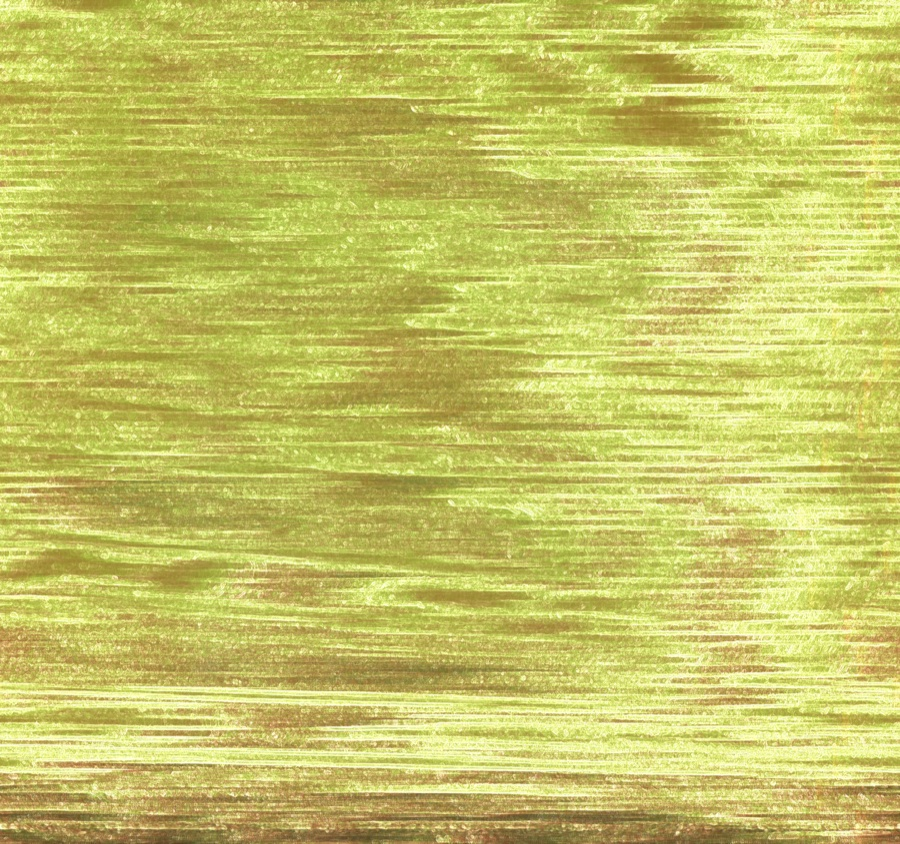
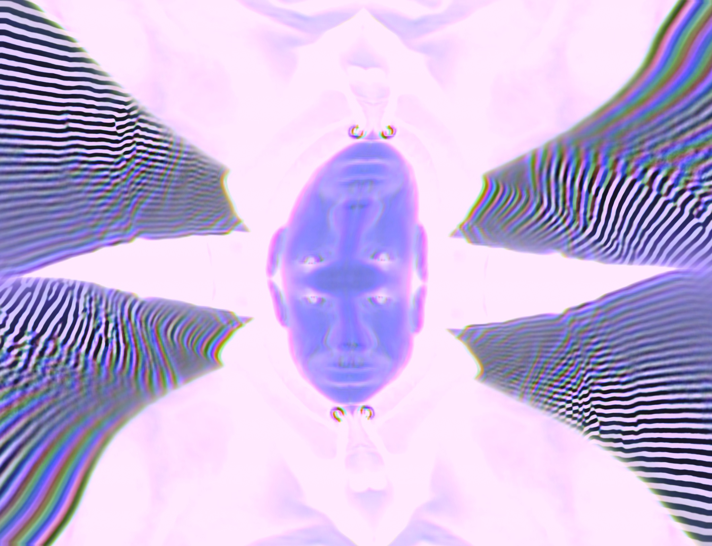
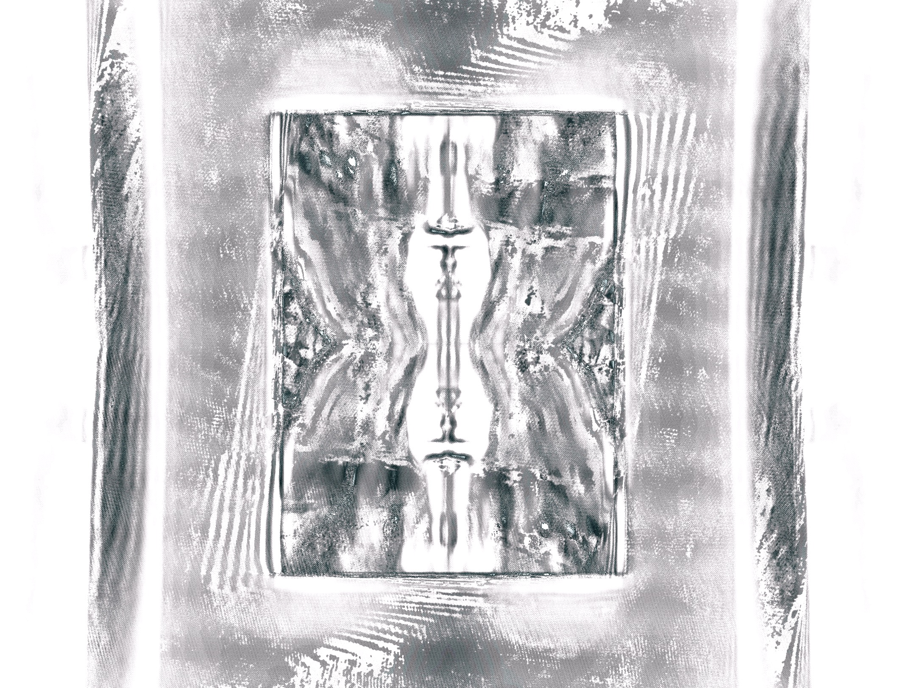
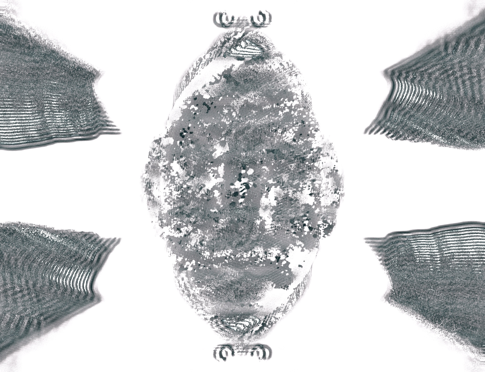
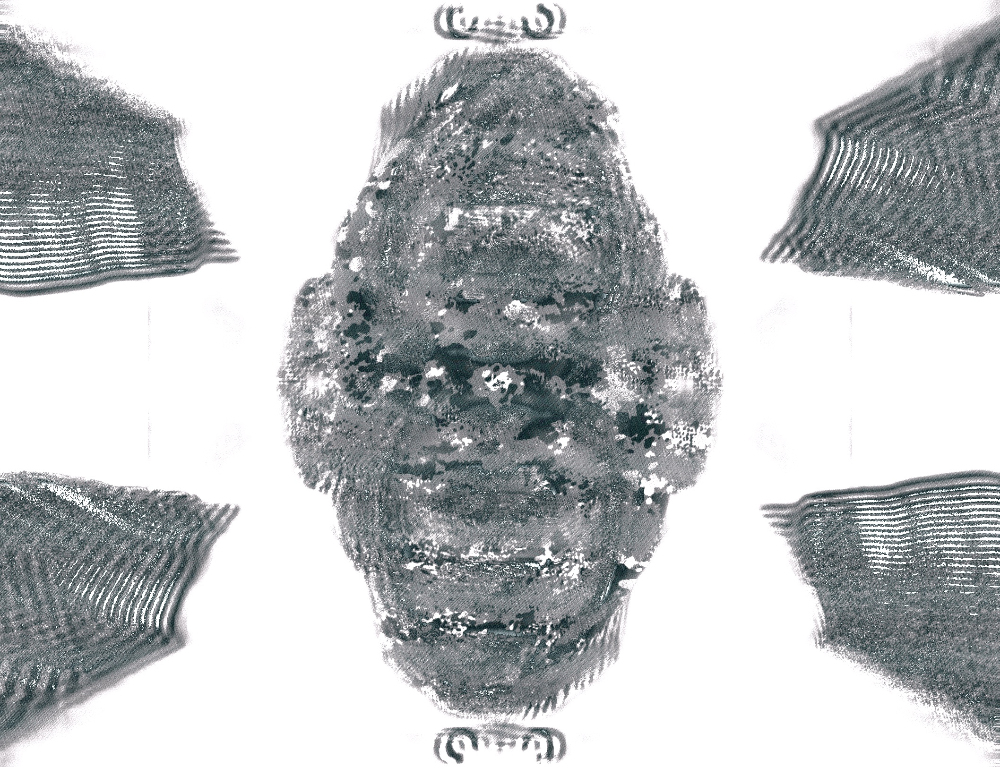
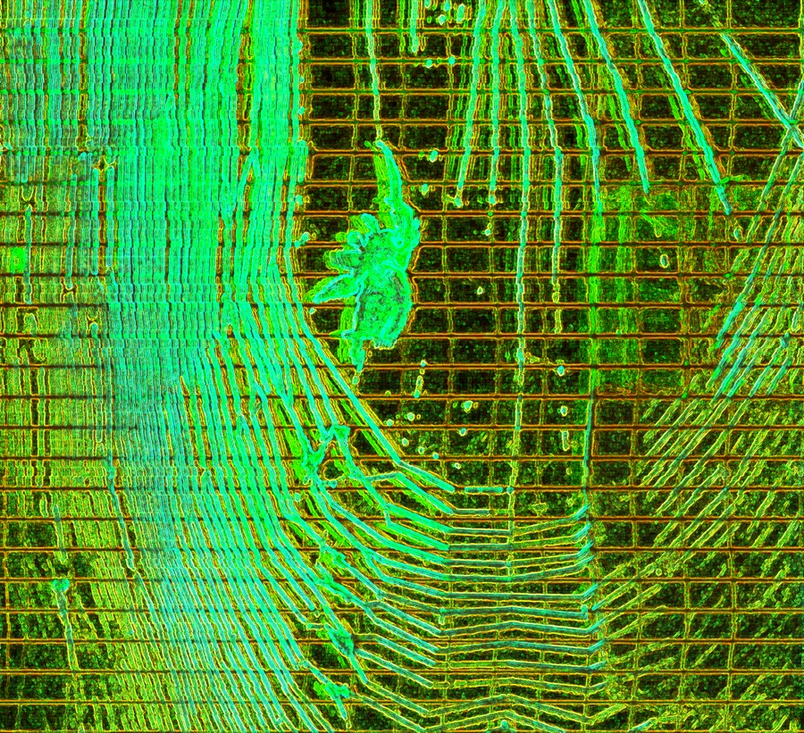
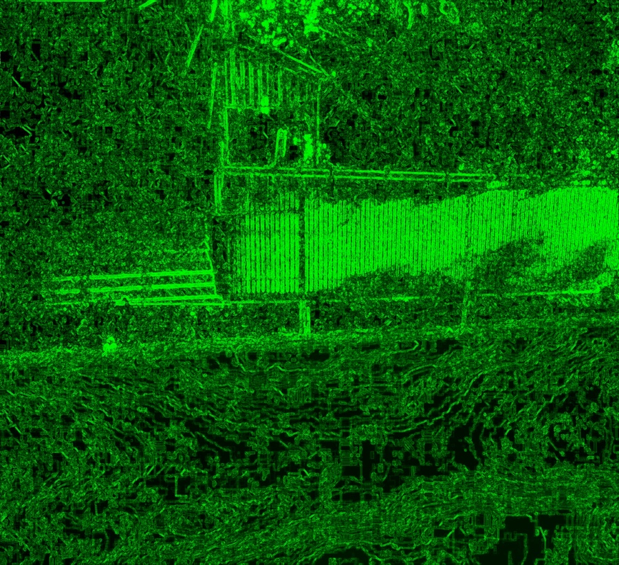
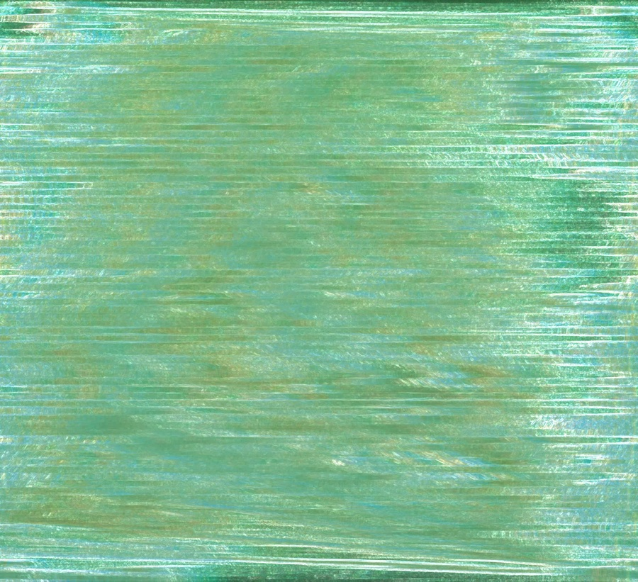
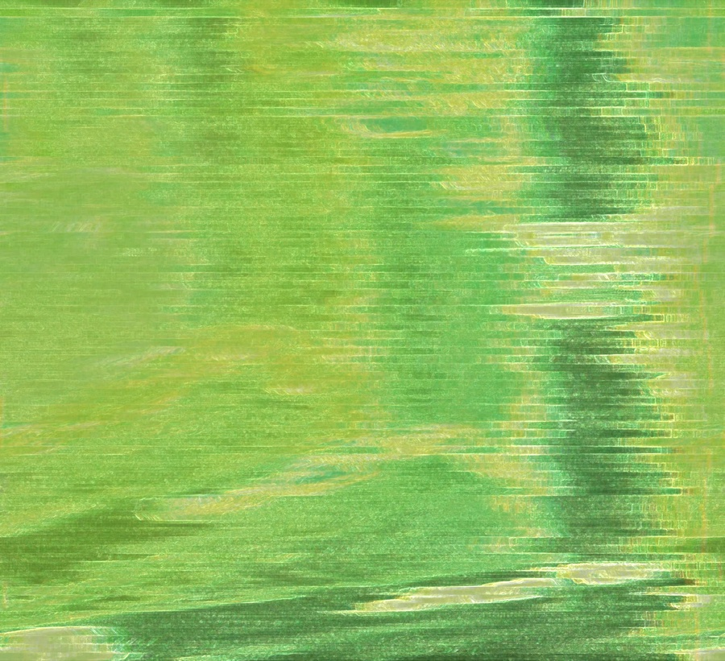

VIDEO SYNTHESIZER
Real-time GPU video synthesizer. 9 GLSL synthesis engines, audio & MIDI reactive, Ableton Link beat sync, live camera input, direct MP4 recording — plus TIAMAT Synth Studio for deep camera processing and FUGUE for live multi-source video compositing.

PRESS F FOR FULLSCREEN OUTPUT ON SECOND SCREEN
Lissajous, Plasma, Ramp Colorizer, Feedback, Kaleidoscope, Waveform 3D, Circuit Bent, Harmonic Web, Video FX — all live on your GPU. TIAMAT Synth Studio adds deep camera processing on top.
Live mic or line input drives every visual parameter in real time. Bass, mid, and treble bands independently modulate any knob. Audio file playback supported.
Full MIDI CC learn on every parameter. Ableton Link syncs beat phase with Live, Traktor, GarageBand, and any Link-enabled app on the same network.
Feed any camera into the pipeline — built-in webcam, iPhone via Continuity Camera, USB camera, or RTSP stream — then process it through any synthesis engine.
One click to capture direct to MP4 at full quality. Built-in clip editor with trim and export. No screen capture tools needed.
Controls on your main screen, fullscreen GPU output to a projector or second display. Press F to toggle fullscreen, Esc to exit.
Companion app for deep camera processing. Flow warp, scan warp, magnetic warp, feedback loop, glitch modes, full colour pipeline, LFO modulation, and preset transfer to Video Life.
Standalone multi-source video compositor. Load up to four clips, blend with 7 GPU modes, luma/chroma key, and difference key — a PhotoBooth-style background subtraction inspired by 80s/90s broadcast gear.
MULTI-SOURCE VIDEO COMPOSITOR
FUGUE loads up to four video clips simultaneously and composites them live on the GPU. Seven blend modes, luma keying, chroma keying, and a difference key — a PhotoBooth-style background subtraction inspired by Quantel, Grass Valley, and the Video Toaster of the late 1980s. Deliberately crude at the edges. Deliberately analog in character.
Mix, Add, Screen, Multiply, Difference, Hard Light — serial compositing A→B→C→D with per-track mix level. Same pipeline as professional broadcast compositors, running live in GLSL.
Hit GRAB PLATE to snapshot the background, then the shader subtracts it live. Subject pixels pass through; matching background pixels are replaced by another clip. Analog edge noise on the boundary — authentic keyer artifact.
Key out darks, brights, or a specific colour on any track. Smoothstep threshold with adjustable softness. Analog boundary noise simulates the low-bandwidth vertical interval of hardware keyers.
Gain, saturation, contrast, and CRT scanline overlay applied to the final composite. Gain maps 0–1 to 0.2×–2.0× — intentional headroom for overdriven, bloomed-out broadcast aesthetics.
Each track has independent play/pause, scrub bar, time display, speed (0.25×–4×), and loop toggle. OpenCV decodes any MP4, MOV, AVI, or MKV in a background thread — no dropped frames in the GL loop.
Inspired by the Panasonic WJ series, Grass Valley switchers, and the NewTek Video Toaster. Deliberately imperfect key edges, hash-noise boundary jitter, and a warm amber broadcast-monitor UI palette.
SYNTH STUDIO
TIAMAT is a dedicated preset design studio for the VIDEO LIFE camera engine. Build complex multi-stage effects — warp, feedback, glitch, chroma, palette — with a full parameter panel and real-time camera preview. Save presets that load directly into VIDEO LIFE with identical output.




SCAN displaces scan lines. MAGNETIC pulls with three animated attractors. FLOW wraps the image in flowing turbulence. Twist dial adds radial rotation to any mode.
Ping-pong FBO feeds the previous rendered frame back into the current one. Four modes: Blend, Displace, Burn, Streak. Zoom and rotate the feedback independently.
CORRUPT shifts scan-line blocks and inverts random zones. BURN solarizes channels with chroma-tinted thresholds. STATIC replaces regions with coloured noise.
Hue rotation, saturation, contrast, posterize, per-channel RGB gain, invert, and a 4-stop custom palette — all applied after feedback and glitch for maximum control.
A sine LFO with rate and depth targets any of four parameters: Warp, Feedback, Glitch, or Chroma. Depth at zero = fully static output for precise preset comparison.
Presets saved in TIAMAT Studio load in VIDEO LIFE with identical output — same shader, same named uniforms, FBOs cleared on load, clocks reset for frame-accurate sync.




★ TIAMAT outputs are live camera processed through TIAMAT Synth Studio
Right-click → Open on first launch to bypass Gatekeeper.
Video Life, TIAMAT Studio, and FUGUE are free and open source, always. If they spark something in your performances, installations, or experiments, a coffee keeps the synthesizers running.
SECURE PAYMENT VIA KO-FI · NO ACCOUNT NEEDED
TIAMAT is a companion preset design app bundled with Video Life. It gives you a dedicated panel for building and saving camera-processing presets with deep parameter control — warp, feedback, glitch, palette, LFO, and more. Presets save as JSON and load directly into Video Life's TIAMAT engine with identical output.
FUGUE is a standalone multi-source video compositor, also included free. Load up to four video clips and blend them live on the GPU using seven blend modes. It adds luma keying, chroma keying, and a PhotoBooth-style difference key (background subtraction) — grab a clean reference frame, and FUGUE isolates your subject over a replacement background video in real time. Designed with the aesthetic of 80s/90s analog broadcast mixers.
Any GPU with OpenGL 3.3+ — which covers essentially all hardware made after 2012. Integrated graphics works fine; a discrete GPU gives smoother performance at high resolutions.
Yes. The macOS build runs natively on Apple Silicon and Intel. Ableton Link, iPhone Continuity Camera, TIAMAT Studio, FUGUE, and all engines are fully supported.
Right-click (or Control-click) the app and choose Open on first launch. You'll get a dialog that lets you proceed. This is a one-time step for apps distributed outside the App Store.
No. Everything runs locally — synthesis, audio analysis, MIDI, recording, TIAMAT Studio, and FUGUE. Ableton Link uses local WiFi/LAN only.
Yes, absolutely. Free for personal, commercial, and performance use. No attribution required.
Yes — fully open source on GitHub. Pull requests welcome.
FREE. OPEN SOURCE. NO ACCOUNT. VIDEO LIFE + TIAMAT + FUGUE.
↓ DOWNLOAD FREE